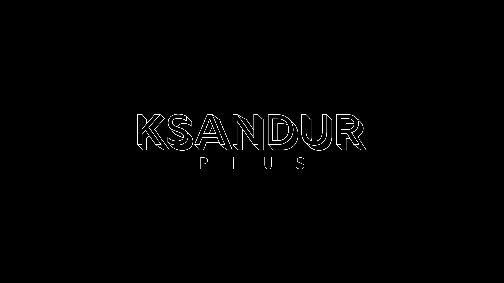
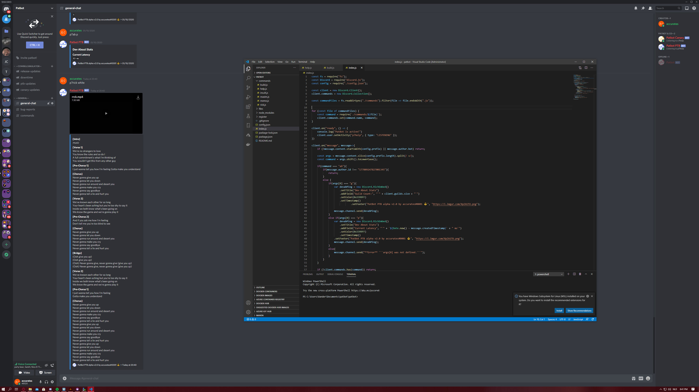
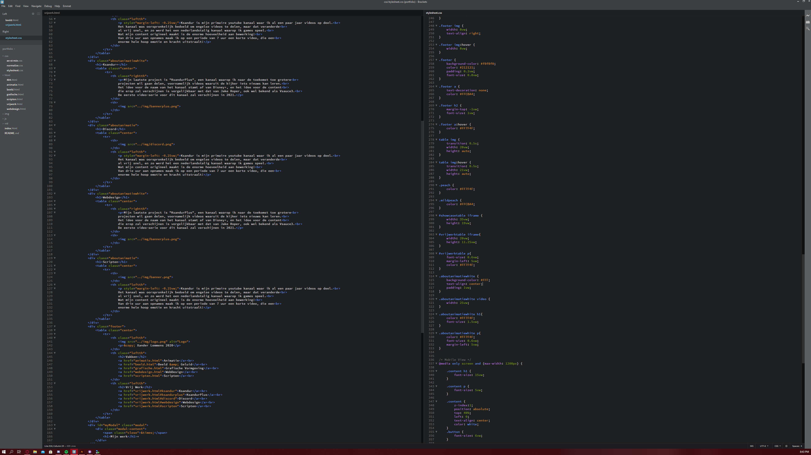
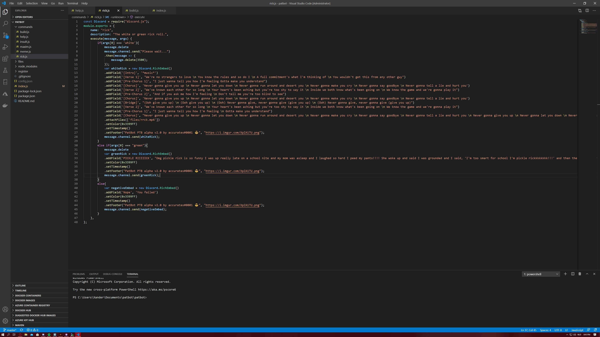

Vrij Werk
Naast school en werk spendeer ik mijn vrije tijd aan allerlei projectjes, hier een klein overzicht.
Ksandur

|
Ksandur is mijn primaire youtube kanaal waar ik al een paar jaar videos op deel. |
|---|
Ksandur+
|
Mijn laatste project is "KsandurPlus", een kanaal waarop ik naar de toekomst toe grotere |
 |
|---|
Discord
|  |
Discord is een bekende online chatapplicatie waar ik een groot deel van mijn tijd op vertoef. |
|---|
Webdesign
|
Naast dat het een vast onderdeel is uit mijn lessenpakket, spendeer ik ook mijn |
 |
|---|
Scripten
|  |
Met de grote populariteit die discord de laatste jaren heeft gezien, zijn ook de mogelijkheden |
|---|